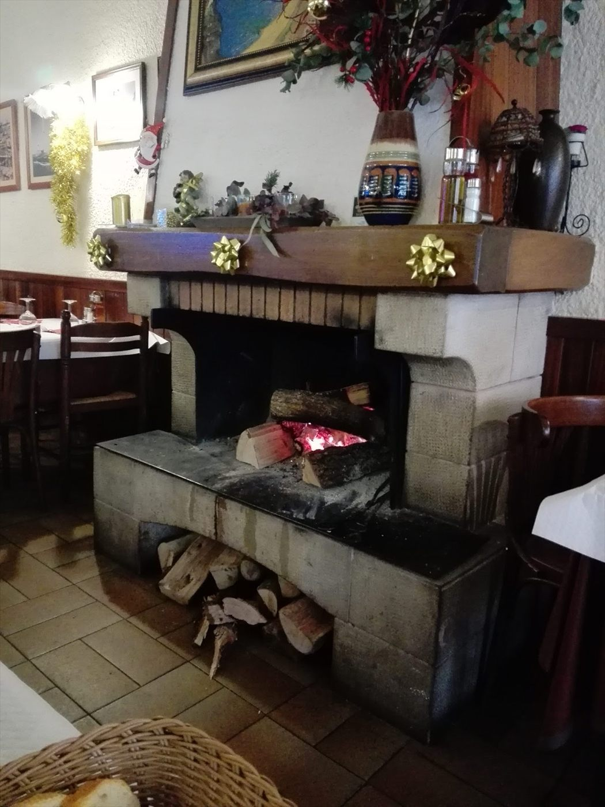
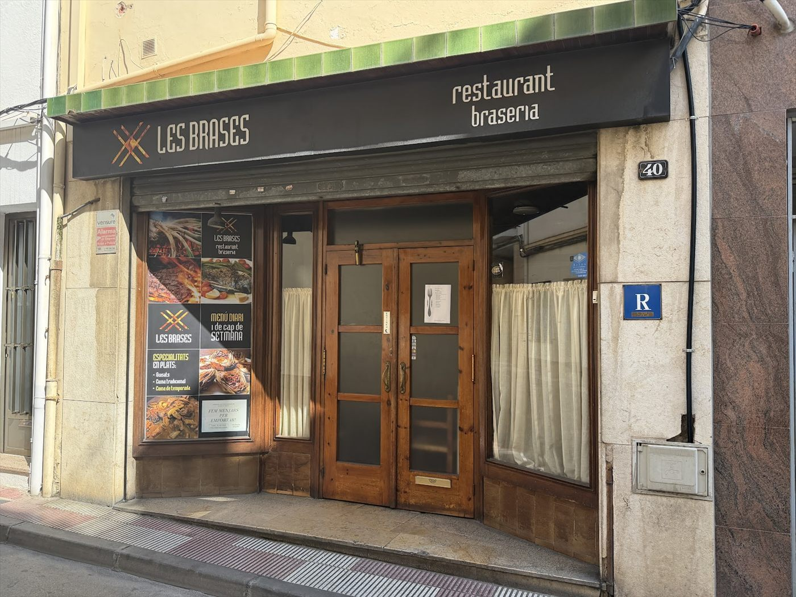

Cuina de sempre, amb passió · Blanes
LesBrases
Carn a la brasa de llenya, canelons de la casa i crema catalana cremada al moment. Un restaurant familiar, de tota la vida, al carrer de l'Antiga.
Encén la graella
4,5★ · 730 opinions a Google
La carta a la brasa
Posa-ho a la graella
Arrossega la carn de la post fins a la graella (o toca-la) i mira com es fa. Quan agafi color, et diem què és i quant val.
Deixa-ho anar aquí
Mitja parrillada de carn a la brasaXurrasco, botifarra, pollastre, cansalada i xoriço16,50 €
Xurrasco a la brasa13,90 €
Secret a la brasa11,50 €
Xai a la brasa13,50 €
Botifarra de pagès a la brasa8,50 €
Mig pollastre a la brasa9,00 €
Orada al forn amb patates14,50 €
Lluç a la planxa amb guarnició14,00 €

La llar de foc
El foc preparat,
el menjar casolà
Al menjador hi crema la llar de foc tot l'any. És aquí on es fan les brases, i és aquí on se sent aquell ambient tradicional i familiar català que tant ens agrada.
Surt de la cuina
Plats de tota la vida
«Desde el ingreso se siente un ambiente tradicional y familiar catalán. Parece atendido por sus dueños, muy cálidos y atentos con todo. La comida también estuvo exquisita.»Sara Quispe · Google ★★★★★
«Increíble. 10/10. Precio asequible […] con bebida, pan, postre y café, con variedad de platos […] con muchas opciones de carne a la brasa.»Elena Torres · Google ★★★★★
«Muy buen servicio y muy rico todo. Hicimos menú de mediodía entre semana. Comida casera con buenas porciones.»JoNash · Google ★★★★★
Reserva la taula
Carrer de l'Antiga, 40
972 33 28 37- Dilluns
- 13:00 – 15:30
- Dimarts
- Tancat
- Dimecres · Dijous
- 13:00 – 15:30
- Divendres
- 13:00 – 15:30 · 20:00 – 22:30
- Dissabte
- 13:00 – 15:45 · 20:00 – 22:30
- Diumenge
- 13:00 – 15:45
